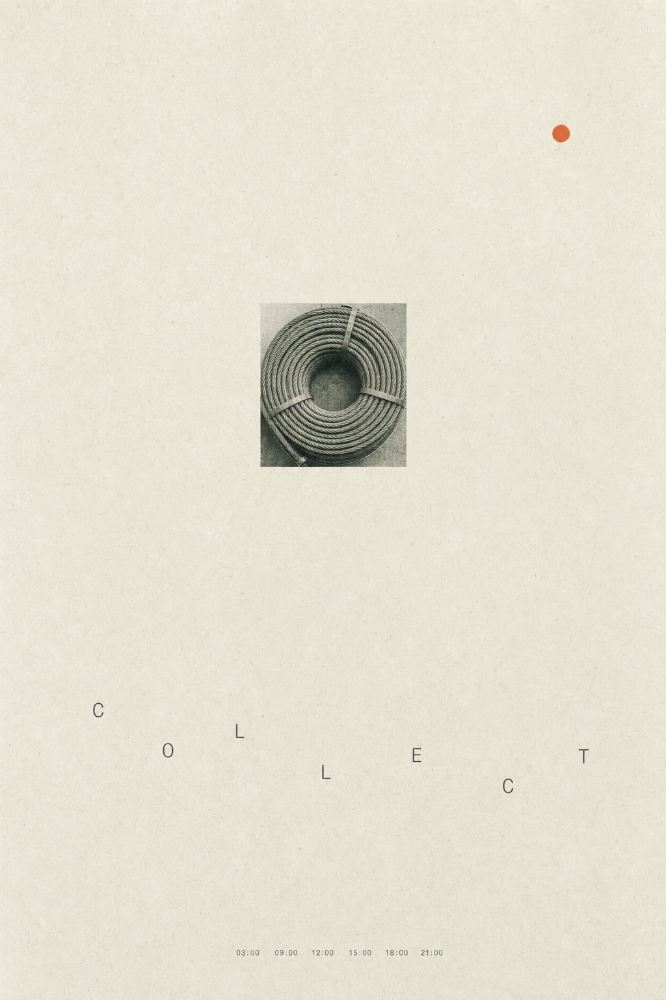
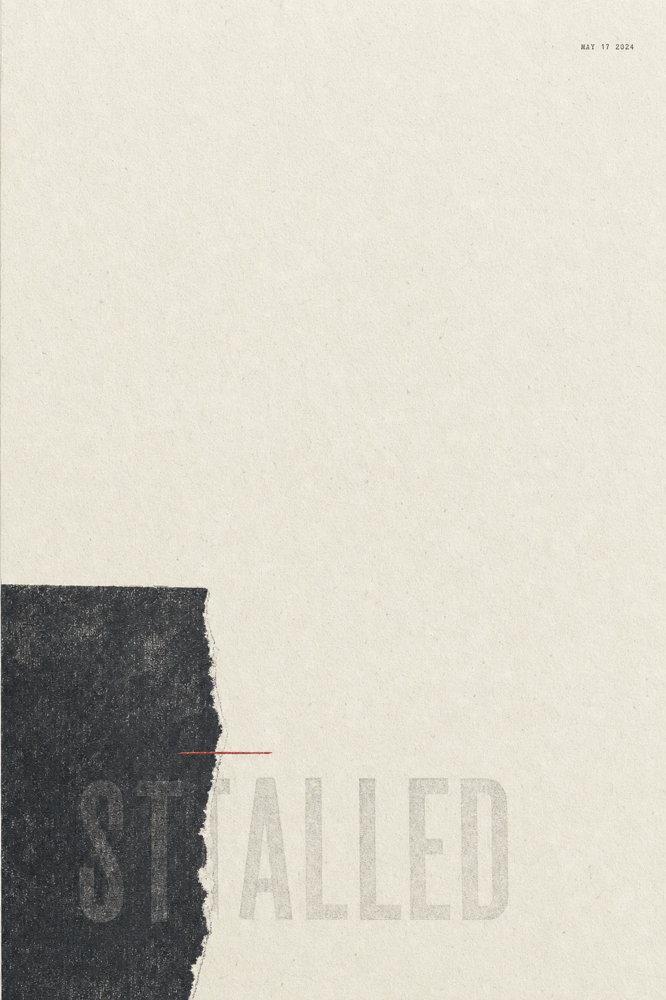
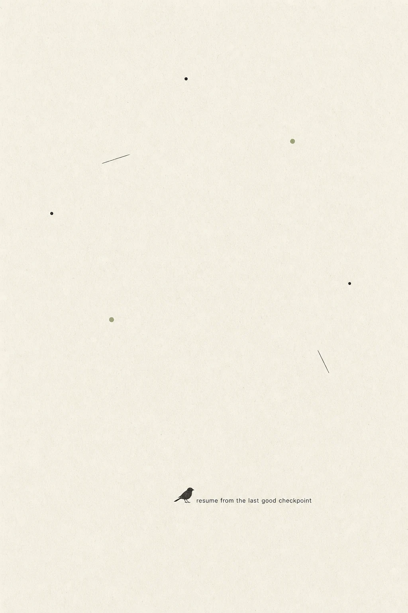

Design experiment · Minimal zine poster
무인 파이프라인 — 3연작
무인으로 도는 데이터 파이프라인에는 세 가지 상태밖에 없습니다. 계속 모으거나, 조용히 멈춰 있거나, 마지막 정상 지점에서 다시 시작하거나. 그 셋을 종이 질감 미니멀 진 포스터로 옮겼습니다.
Three states of an unattended pipeline — collecting, stalled, resuming — rendered as a minimal paper-texture zine poster series.
가운데 포스터가 이 연작의 출발점입니다. 매일 도는 파이프라인의 수집 단계는 멀쩡한데 실행 단계만 8일째 멈춰 있던 적이 있습니다. 겉으로는 아무 문제가 없어 보였습니다 — 로그도 쌓이고 후보도 늘어나고 있었으니까요. 조용한 정지가 시끄러운 실패보다 오래 간다는 게 이 시리즈의 주제입니다.

단일 스페시먼 레이아웃. 하단 마이크로텍스트는 실제 수집 잡의 발화 시각 여섯 개입니다.

엣지 카운터웨이트. 블록이 글자를 반쯤 가려서, 멈춰 있다는 사실 자체가 잘 안 읽히도록 했습니다.

닷 오빗. 여백을 가장 크게 두어 복구가 조용한 사건이라는 인상을 남깁니다.
제작 방식
프롬프트를 손으로 쓰지 않았습니다. 레이아웃 패밀리·앵커 형태·타이포 모드·질감·무드·용지 톤·강조색을 고정된 어휘에서 고르는 스킬을 통해 조합을 정하고, 그 레시피를 프롬프트로 컴파일해 이미지 모델에 넘겼습니다. 자유 작문 대신 검증된 골격을 채우는 방식이라 세 장이 한 시리즈로 묶입니다.
| 포스터 | 레이아웃 | 앵커 | 타이포 | 강조색 |
|---|---|---|---|---|
| 01 collect | single-specimen | 사진 크롭 | 분절 낱자 + 아카이브 마이크로텍스트 | 산화 오렌지 점 1개 |
| 02 stalled | edge-counterweight | 찢긴 색 블록 | 저대비 고스트 텍스트 | 카드뮴 레드 헤어라인 |
| 03 resume | dot-orbit | 플랫 실루엣 | 가장자리에 붙인 한 줄 | 페일 세이지 점 2개 |
세로 A2 비율 ·
1024×1536 생성 후 웹용 WebP로 변환(3장 합계 508KB) · 원본 PNG는 인쇄용으로 별도 보관.